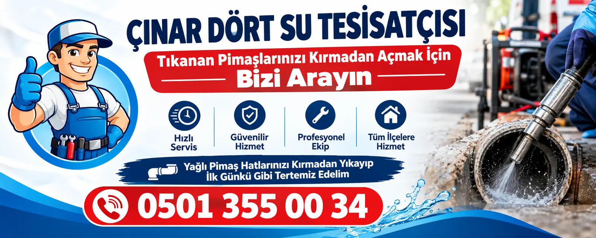

Tuzla, İstanbul · 7/24
Tuzla Tıkanıklık Açma Servisi
Tuzla'da tuvalet, lavabo, banyo ve mutfak gideri tıkanıklığı için 7 gün 24 saat ulaşabileceğiniz ekibiz. Kırmadan, gerektiğinde kamerayla çalışıyor; fiyatı işe başlamadan söylüyoruz.

- 7/24 hizmetGece, hafta sonu ve bayramda da arayabilirsiniz.
- Ortalama 30 dakikaAnadolu yakasında adrese ortalama 30 dakikada ulaşıyoruz.
- Kırmadan, kameralıTıkanıklığın yerini gerektiğinde kamerayla görüp kırmadan açıyoruz.
- Fiyat öncedenFiyatı işe başlamadan söylüyor, onayınız olmadan başlamıyoruz.
Tuzla Tıkanıklık Açma Servisine nasıl ulaşırsınız?
Tuzla'ya D-100, sahil yolu ya da otoyoldan geliyoruz; İçmeler ve Aydınlı için sahil tarafı, Akfırat ve Orhanlı için otoyol bağlantısı daha uygun oluyor. Tuzla doğu-batı uzanan bir ilçe; arayınca mahallenizin yanında sahilde mi, tersane tarafında mı yoksa yukarıda mı olduğunuzu söyleyin. Kısa bir video da gönderirseniz hazırlıklı geliyoruz.
Telefon: 0501 355 00 34 · WhatsApp: mesaj gönderin · 7 gün 24 saat
Tuzla 7/24 Acil Tıkanıklık Açma Servisi
Tuzla'da gece çağrıları çoğunlukla Aydınlı ve İçmeler'deki tersane çalışanlarının oturduğu binalardan, vardiya dönüşü saatlerinde geliyor. Yaz gelip sahil tarafındaki eski yazlıklar dolunca cumartesi ve pazar telefonlarımız sıklaşıyor. Tuzla için de saat sınırımız yok, 7/24 çalışıyoruz; pazar sabahı ya da gece üçte aramanız sorun değil.
Tuzla'da acil durumun yerel bir hali, kış boyu kapalı kalmış sahil yazlığının açıldığı ilk gün yaşanıyor: kurumuş sifonlardan koku geliyor, ilk kullanımda su geri çıkıyor. Aradığınızda önce hangi muslukların kapanması gerektiğini, evde suyu nasıl durduracağınızı söylüyoruz; sonra kamerayla hattı kontrol etmeye geliyoruz.

Tuzla'da hangi gider açma hizmetlerini veriyoruz?
Tuzla Tuvalet Tıkanıklığı Açma
Tuzla sahilindeki eski yazlık sitelerde tuvalet tıkanıklığı genelde ince ve eğimi zayıf bir hatta oluyor; yaz aylarında kalabalıkla birlikte kâğıt ve ıslak mendil hattı tıkıyor. Devamını okuyun
Tuzla Lavabo Tıkanıklığı Açma
Akfırat ve Orhanlı'daki yeni sitelerde banyo lavabosu tıkanıklığı çoğunlukla ilk yıllarda görülüyor; inşaattan kalan derz dolgusu ve silikon parçaları saç ile diş macununa karışıp sifonu tutuyor. Devamını okuyun
Tuzla Banyo Gideri Açma
Tuzla'da sahile yakın evlerde yazın duş ve küvet giderinden bolca kum iniyor; deniz dönüşü yıkanan havlu ve ayakkabılar da buna ekleniyor. Devamını okuyun
Tuzla Mutfak Gideri Açma
Tuzla'nın tersane ve sanayi çevresinde işçi yemekhaneleri ve lokantalar çok; buraların mutfak hattı yoğun yağla kısa sürede daralıyor. Devamını okuyun
Tuzla acil su tesisatçısı
Tuzla'da tıkanıklığın yanında musluk, batarya, rezervuar ve boru patlağı gibi su tesisatı arızalarına da 7/24 geliyoruz; gizli kaçaklar için su kaçağı tespiti yapıyoruz. Devamını okuyun
Tuzla'da belediye gider açma hizmeti veriyor mu?
Tuzla Belediyesi evinizdeki gidere ekip göndermez; şebeke İstanbul genelinde İSKİ'ye ait ve sokakta taşan bir ana hat için numara ALO 185. Sanayi bölgesindeki işyerleri için ayrı bir not: organize sanayi içindeki hatlar genelde bölge yönetiminin sorumluluğunda olabiliyor, önce bağlı olduğunuz yönetime danışmak işe yarar.
| Tıkanıklığın yeri | Kimin sorumluluğunda? | Kimi aramalısınız? |
|---|---|---|
| Evinizdeki tuvalet, lavabo, duş ve mutfak gideri | Mülk sahibi | Özel servis (biz) |
| Bina kolonu ve parsel bacasına kadar olan hat | Mülk sahibi / bina yönetimi | Özel servis (biz) |
| Sokaktaki ana kanalizasyon hattı ve sokak rögarı | İSKİ | ALO 185 (7/24) |
Tuzla tıkanıklık açma fiyatları ne kadar?
Tuzla'da işin bedelini en çok değiştiren, konutta mı yoksa sanayi ya da tersane çevresindeki bir işyerinde mi olduğu. Bir daire lavabosu ile metal tozu ve yağ dolmuş bir atölye hattı aynı iş değil. Sahil tarafındaki eski yazlıklarda da hat bulmak zaman alabiliyor. Görüp sebebi anlatıyor, fiyatı işe başlamadan söylüyoruz.
Önemli: Fiyatı usta yerinde gördükten sonra, işe başlamadan söylüyoruz; onayınızı almadan işe başlamıyoruz.
Tuzla'da tıkanıklık açma ustası çağırırken dikkat etmeniz gerekenler
Tıkanıklık acil olunca insan ilk bulduğu numarayı arıyor; çok anlaşılır. Ama cihazı olmadan gider açacağını söyleyen biri tesisatınıza zarar verebilir ve küçük bir işin masrafı büyüyebilir. Kimi çağırırsanız çağırın, aşağıdakilere dikkat edin.
Kırma önerisine hemen evet demeyin
"Burayı kırmak lazım" deniyorsa önce kamera görüntüsü isteyin. Çoğu tıkanıklık kırmadan açılır; kırmak gerekse bile yalnızca sorunlu nokta kırılmalıdır.
Fiyatı işe başlamadan sorun
Usta durumu gördükten sonra fiyatı söylemeli ve onayınızı almadan işe başlamamalı. "Bakarız, sonra konuşuruz" cevabına dikkat edin.
Ulaşabileceğiniz birini seçin
Sorun tekrar ederse yeniden ulaşabileceğiniz, telefonu açılan ve size ne yaptığını anlatan biriyle çalışın.
Akışı birlikte test edin
İş bitince suyu birlikte akıtın; suyun gittiğini kendi gözünüzle görmeden işi bitmiş saymayın.
Hangi cihazla geleceğini sorun
Gider açma makine işidir: spiral makinesi, gerektiğinde basınçlı su ve kamera. Cihazı olmadan iş yapmaya çalışmak tesisata zarar verebilir.
Yalnız kimyasalla gelene dikkat
Kimyasal kalıcı çözüm değildir; eski borulara ve contalara zarar verebilir, açamazsa giderde bekleyip sonraki müdahaleyi tehlikeli hâle getirir.
Tuzla'ya en yakın tıkanıklık açma servisi hangisi?
Tuzla'ya en yakın tıkanıklık açma servisi meselesinde açık konuşalım: Tuzla'da kapısını açtığımız bir yer yok. Anadolu yakasının her yerinde iş yapan ekibimiz İçmeler, Aydınlı ya da Akfırat'taki bir eve ortalama 30 dakikada çıkıyor. Tepeören gibi uzak noktalarda bu süre uzayabiliyor; aradığınızda gerçekçi süreyi baştan söylüyoruz.
Tuzla'da giderler neden sık tıkanıyor?
Tuzla'da sahildeki Cami, İstasyon ve Postane mahallelerinde eski yazlık siteler ve alçak apartmanlar var. Aydınlı ve İçmeler tersaneler bölgesinin çevresinde işçi konutlarıyla büyümüş; Akfırat ve Orhanlı'da son yıllarda yükselen yeni siteler, Tepeören'de ise hâlâ köy dokusuna yakın müstakil evler görülüyor.
Sahildeki eski yazlıklarda tesisat yıl boyu kullanılmak için yapılmamış; borular ince, eğimler gelişigüzel. Kışın evde oturulmaya başlanınca bu hatlar yükü kaldıramıyor. Akfırat'ın yeni bloklarında ise sorun daha çok mutfak kolonunda; çok katlı binada yağ aşağıya inene kadar soğuyup kolon dibinde birikiyor.
Tuzla'da tersane, organize sanayi ve deri, kimya gibi sanayi bölgeleri konutlara yakın; işyeri hatlarında yağ, metal tozu ve endüstriyel artık başka bir iş demek. Sahil dolgu kesimlerinde düz arazi yüzünden bahçe hatları yavaş akıyor, Tepeören'in müstakil evlerinde de uzun bahçe hatlarında kök sık çıkıyor.
Tuzla geniş bir ilçe; sahilden Tepeören'e gitmek ayrı bir yol, o yüzden aradığınızda tam yeri sormamız önemli. Tersane bölgesinde vardiya çıkışlarında trafik yoğunlaşıyor. Akfırat ve Orhanlı'daki sitelerde güvenlik kapıda kimlik soruyor; sanayi tesislerinde ise iş güvenliği girişini sizinle önceden ayarlıyoruz.
Tuzla'da hizmet verdiğimiz mahalleler
- Akfırat
- Anadolu
- Aydınlı
- Aydıntepe
- Cami
- Evliya Çelebi
- Fatih
- İçmeler
- İstasyon
- Mescit
- Mimar Sinan
- Orhanlı
- Postane
- Şifa
- Tepeören
- Yayla
Tuzla'da Akfırat, Anadolu, Aydınlı, Aydıntepe, Cami ve Evliya Çelebi mahallelerinden çağrı alıyoruz; listede adı geçmeyen mahalleler için de aynı şekilde geliyoruz.
Tuzla tıkanıklık açma: sık sorulan sorular
Tuzla'da hangi tıkanıklık açma hizmetlerini veriyorsunuz?
Tuzla'da tuvalet tıkanıklığı, lavabo tıkanıklığı, banyo gideri (duş, küvet, yer süzgeci) ve mutfak gideri açma hizmeti veriyoruz; gerektiğinde kameralı tespit yapıyoruz.
Tuzla'ya ne kadar sürede geliyorsunuz?
Anadolu yakasında adrese ortalama 30 dakikada ulaşıyoruz. Trafik ve o anki iş yoğunluğuna göre süre değişebilir; arama sırasında tahmini süreyi söylüyoruz.
Tuzla'da belediye gider açıyor mu?
Hayır. Ev ve bina içindeki tesisat mülk sahibinin sorumluluğundadır; sokaktaki ana kanalizasyon hattı ise İSKİ'nin. Sokak hattı taşıyorsa ALO 185'i, eviniz ya da binanız tıkalıysa bizi arayın.
Fiyatı ne zaman öğrenirim?
Fiyatı usta yerinde gördükten sonra, işe başlamadan söylüyoruz; onayınızı almadan işe başlamıyoruz. Fotoğraf ya da videoyla yaklaşık bilgi de verebiliyoruz.
Gece ve hafta sonu çalışıyor musunuz?
Evet. 7 gün 24 saat hizmet veriyoruz.
Tuzla çevresindeki ilçeler
Şu an hizmet veriyoruz · 7/24
Tuzla için tıkanıklık açma ustası mı lazım?
7/24 arayabilir ya da WhatsApp'tan yazabilirsiniz.
7/24 arayın0501 355 00 34- Anadolu yakasında adrese ortalama 30 dakikada ulaşıyoruz.
- Fiyat işe başlamadan söylenir
- Kırmadan, gerekirse kameralı